Individual purchase
“What is the price for one listed item?”
The variant’s item price plus recognised postage. A recognised percentage coupon reduces the item price, leaving postage unchanged. Quantity offers are not applied to this one-item total.
FROM SEARCH TO THE RIGHT SPOOL
Look inside eBay listings, compare matching colours and materials, and see what a quantity offer could cost per item.
The finder works on eBay UK and eBay US search results and item pages. It reads the listing data eBay provides, separates in-stock and out-of-stock choices, and shows readable price explanations. It does not place orders.
01 / QUICK START
02 / KEEP BROWSING
After the first Scan, use Previous and Next at the top of the finder, or eBay’s own page links. The number between the finder buttons shows the current page. Each button is disabled when eBay provides no usable link in that direction, including first, last and single-page results. When results change without a full reload, newly discovered listings join the existing queue. A running scan grows; a completed scan starts processing the new candidates automatically. Returning to an earlier page does not check the same listing again.
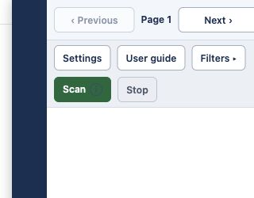
Results already collected stay available to your filters even when they are no longer visible on eBay. The finder scans visible, organic cards in the main results list; sponsored listings, recommendations and secondary result groups are excluded from scanning. The title check used to open the sidebar also recognises sponsored titles.
An open finder stays open through results updates. When it is closed, new result titles can open it if they contain “filament”. Ordinary finder updates do not reopen it immediately after you close it.
Stop pauses processing. Successful responses already in flight are retained. Click Scan to continue the remaining queue and add the current page’s listings. After a request failure, the scan may stop; discovering new listings can resume it, unless you explicitly clicked Stop. Failed listings remain listed under Could not check.
A full page reload, a new search or closing a tab can end the live queue. Some saved results and filters may return, but the finder is not a permanent price history or a live stock monitor. Already scanned listings are not automatically refreshed during the same scan session.
03 / FILTER THE DETAILS
yellow PLA silk requires all three pieces of text, in any order.JAYO "Buy 5 pay 3".Filtering is case-insensitive and uses text fragments. Quotes keep a phrase together: "silk PLA" matches that sequence. Empty fields impose no restriction; clearing both shows all cached variants. Typing alone does not filter: click Apply filters or press Enter.
On an individual listing, there is one variant-name filter. Choices are read automatically; there is no Scan or Stop button. Clicking an available variant asks eBay to select its dropdowns. If that fails, use the offered reload link or select the options manually. It does not add the item to your basket.
04 / THE CONTROLS
| Control | What it does |
|---|---|
| Previous / Page N / Next | Navigates search results using eBay’s existing links. Page N shows your current page. Previous and Next are disabled when the corresponding link is unavailable. Navigation alone does not start the initial scan. |
| Open / Close rail | Expands or collapses the finder. Its 44-pixel strip always keeps its own space. Escape also collapses an open finder when focus is inside it. |
| Resize handle | Drag to change the open width. With the handle focused, use Left/Right to adjust it, Home for the minimum, or End for full width. An empty compact finder has a fixed compact width. |
| Settings | Opens appearance and scan preferences. Drag the popup header to move it. |
| User guide | Opens this guide in a new tab. You can also right-click the extension’s Chrome toolbar icon and choose User guide. |
| Filters | Shows or hides the filter controls without clearing or changing the applied filter. |
| Apply filters / Enter | Applies the values you have typed and recalculates matching averages. |
| Sort by | Shows the Order list. Choosing an option immediately changes the order and highlights its field in tiles or single lines. It appears when there are entries to sort. |
| Scan | Starts the initial scan or resumes the accumulated queue. Completed and failed listings are kept, so Scan does not wipe the cache or repeat them. |
| Stop | Pauses a search scan, including automatic processing of later pages, until Scan is clicked again. |
| Results | Shows or hides the matching in-stock entries on search pages. |
| Out of stock variants | Expands the matching unavailable choices. They are excluded from matching averages and cannot be selected for purchase by the finder. |
| Could not check | Lists failed listings and the reported reason. Their prices have not been verified. |
| Information “i” | Hover, focus or tap to read a field’s explanation. Escape dismisses it. These icons explain prices without opening the listing. |
| What’s new | Opens release notes from the toolbar icon’s right-click menu. |
The scan counter counts listings checked, while “variants extracted” counts option combinations. One listing can contain hundreds of variants. A grey disabled button is unavailable in the current state.
05 / READ THE PRICE
“What is the price for one listed item?”
The variant’s item price plus recognised postage. A recognised percentage coupon reduces the item price, leaving postage unchanged. Quantity offers are not applied to this one-item total.
“What could each item cost at the required quantity?”
An experimental estimate after one recognised quantity offer and any recognised coupon, with recognised postage divided across the quantity. Without a supported offer or coupon, it shows the regular Individual purchase.
“What is typical across my matching choices?”
An experimental mean for the in-stock, priced variants matching your filters, calculated separately for each listing. It appears on each entry from that listing.
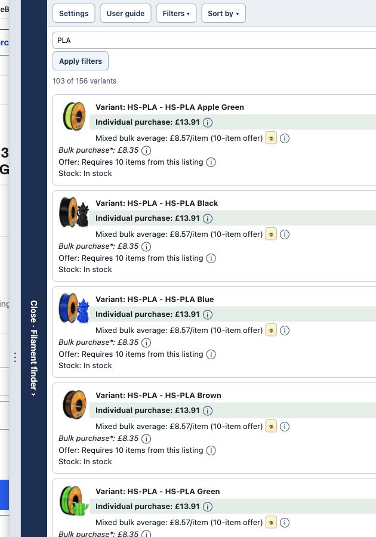
The first entry is HS-PLA Apple Green from a Buy 6 Get 4 Free, Add 10 listing.
(£13.91 × 6 + £0 postage) ÷ 10 = £8.346, rounded to £8.35. The estimated order cost for ten at that same price is £83.46.Open the source listing. These figures describe the capture, not a current price promise.
| Recognised offer | Calculation before any coupon |
|---|---|
| Buy Q Pay P | (item price × P + postage) ÷ Q |
| Buy Q Get F Free | (item price × Q + postage) ÷ (Q + F) |
| Buy Q Save D% | (item price × Q × (1 − D/100) + postage) ÷ Q |
| eBay multi-buy | (recognised unit price at the tier × required quantity + postage) ÷ required quantity. Requires identical items of that variant. |
For title-based offers, the estimate assumes every item has the row’s price. Mixed-price baskets may receive a different discount. The finder uses one unambiguous supported title offer, or a qualifying eBay multi-buy tier when it is at least as favourable. It does not stack two quantity offers. Unrecognised or ambiguous wording is left out.
A recognised percentage coupon is applied to the item subtotal after the quantity discount, before postage. Coupon recognition is limited to supported eBay coupon markup and percentage-off-with-code wording. Maximum savings, minimum spend, eligibility, expiry and whether offers combine must be checked on eBay. The finder does not enter a coupon code for you.
Only matching variants that are marked in stock, have a valid non-negative item price, and share one currency contribute. Each variant has equal weight: stock quantities are ignored. Out-of-stock entries are excluded.
When every contributing variant has a consistent recognised quantity offer (same quantity, offer type, identical-item rule and coupon percentage), the average uses those estimated offer prices per item. Otherwise it is the mean regular item price before offers, coupons and postage. A coupon by itself does not turn the average into a coupon-adjusted offer average.
Open the average’s information icon to see the count, base average and, for a consistent offer, the average per item plus the cheapest and most expensive required-quantity selections. Those cheapest/most-expensive figures assume all items have that variant’s price; they are not an optimised mixed basket.
06 / COMPARE LIKE WITH LIKE
Open Sort by and choose an entry in Order. Ascending means A–Z or low–high; descending means Z–A or high–low. The green highlight identifies the field used to order the entries. The screenshots below are actual extension-rendered results, captured after selecting each option. Expand a choice to compare both directions. Click an image to open it at full size.
Sorting changes only presentation. It does not run another scan or change your filters. Unknown numeric prices follow known prices in either direction. Different currencies are grouped by currency rather than converted into one common price.
Orders entries by their listing title. Ascending groups titles A–Z; descending reverses them. The Listing field is highlighted.
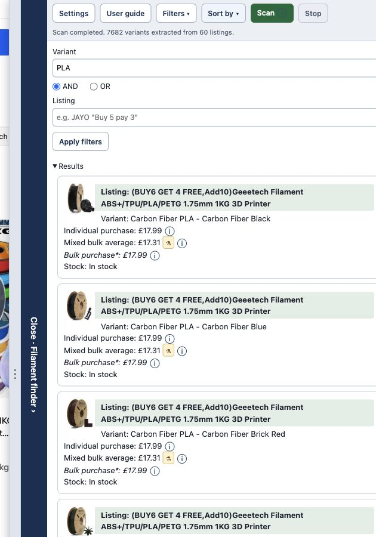
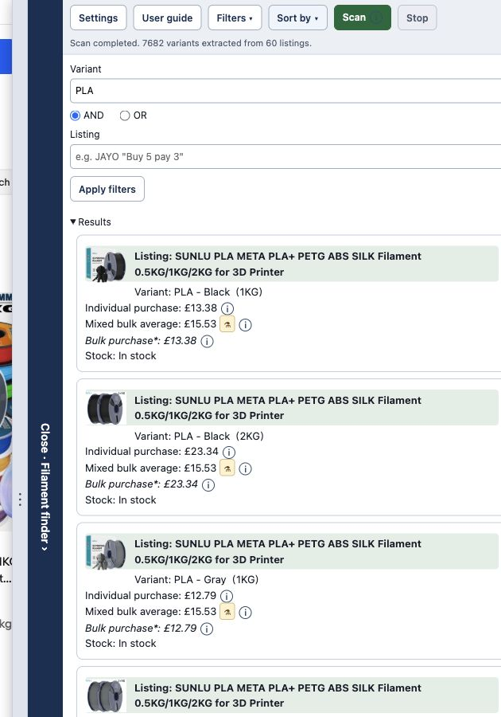
Orders by the variant label, such as material and colour. The Variant field is highlighted.
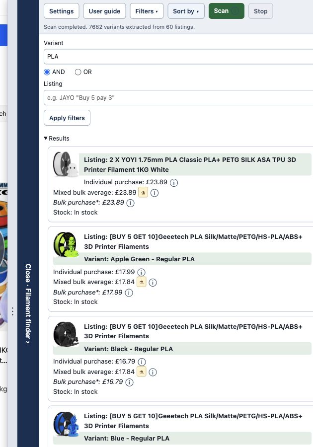
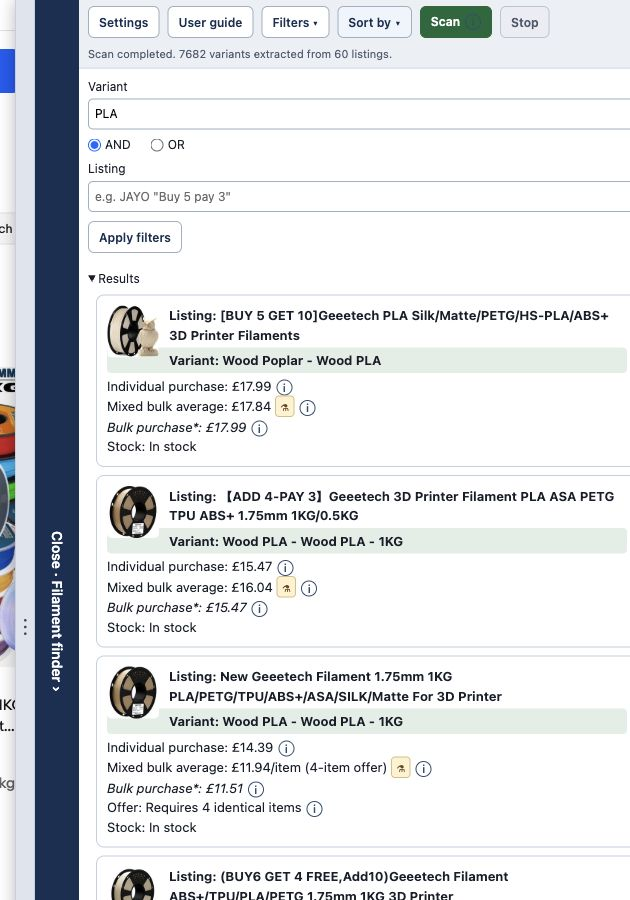
Orders by the one-item total including recognised postage and any recognised coupon. Quantity offers are excluded. The Individual purchase field is highlighted.
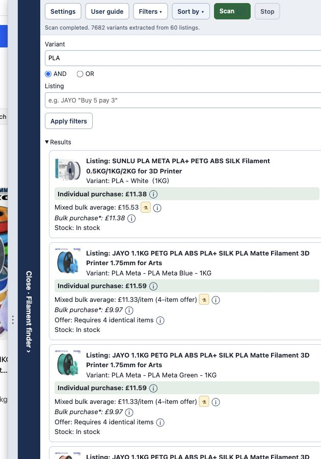
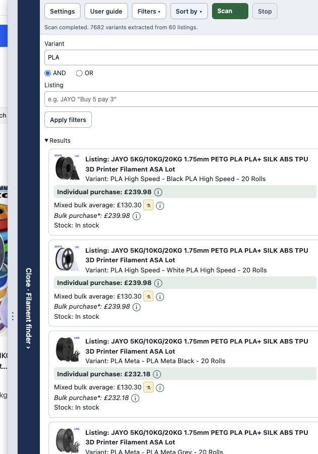
Orders by the experimental effective item price at the recognised offer quantity, including any recognised coupon and shared recognised postage. The Bulk purchase field is highlighted.
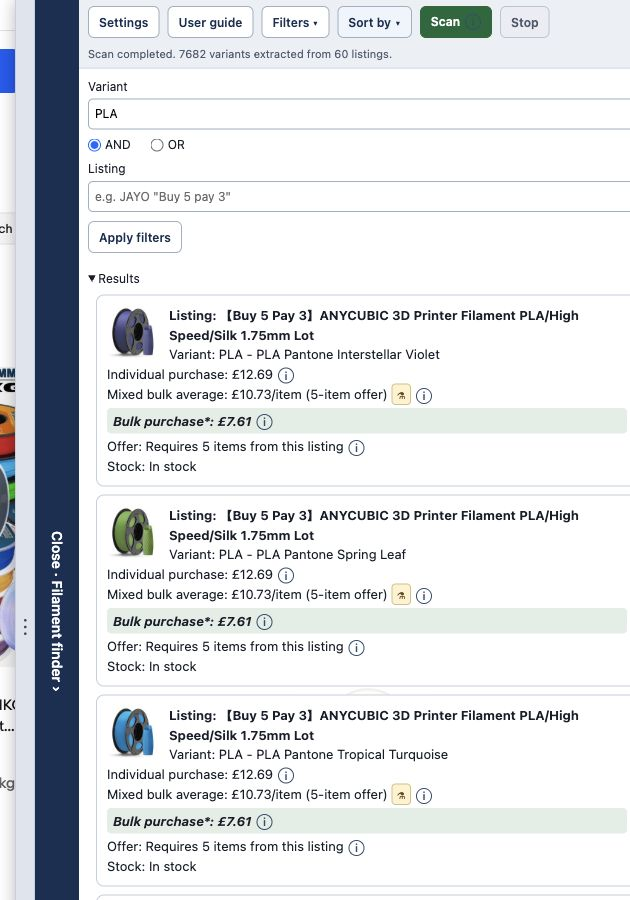
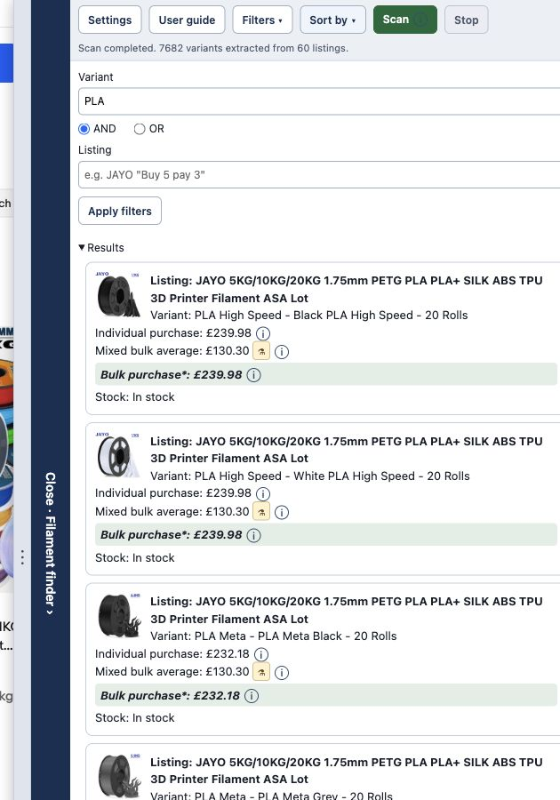
Orders listings by the mean price of their matching in-stock variants. Consistent quantity offers use an offer mean; otherwise this is the regular item-price mean before offers, coupons and postage. The Mixed bulk average field is highlighted.
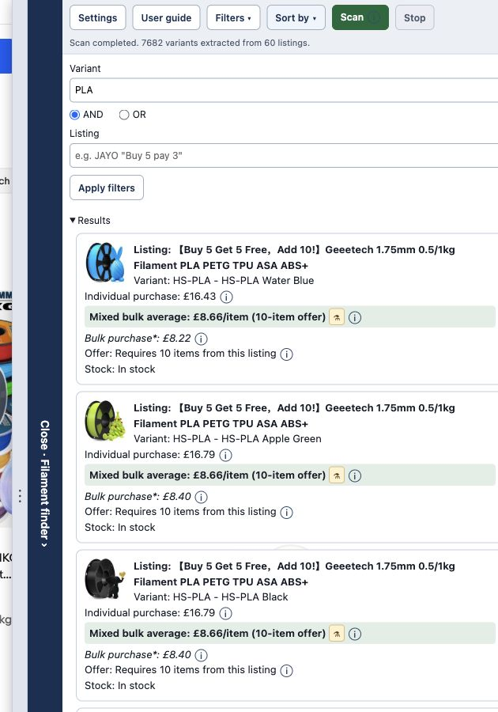
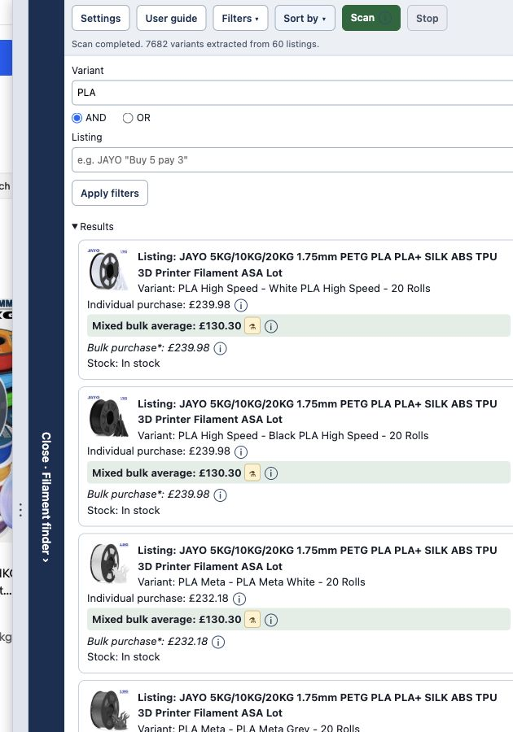
Orders the current listing’s variant labels. The Variant field is highlighted; only this listing’s variants are included.
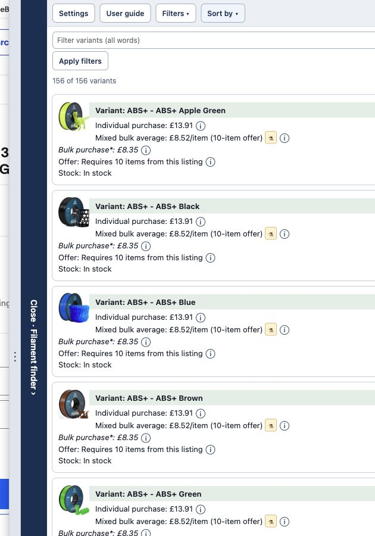
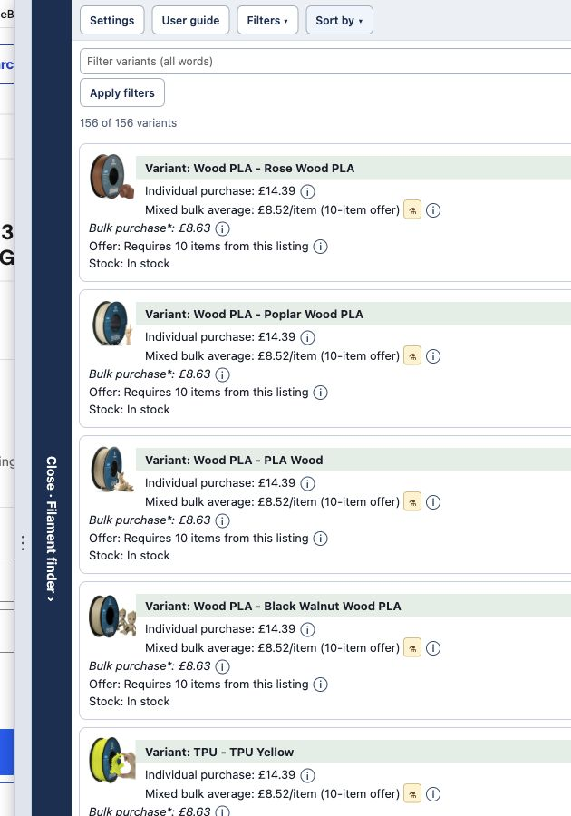
Orders this listing’s variants by the one-item total, including recognised postage and any recognised coupon. The Individual purchase field is highlighted.
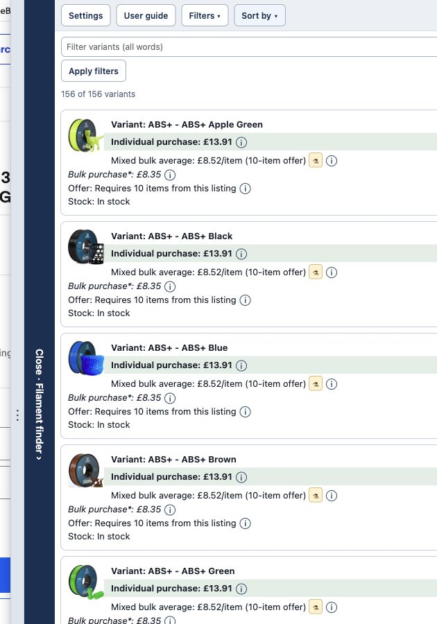
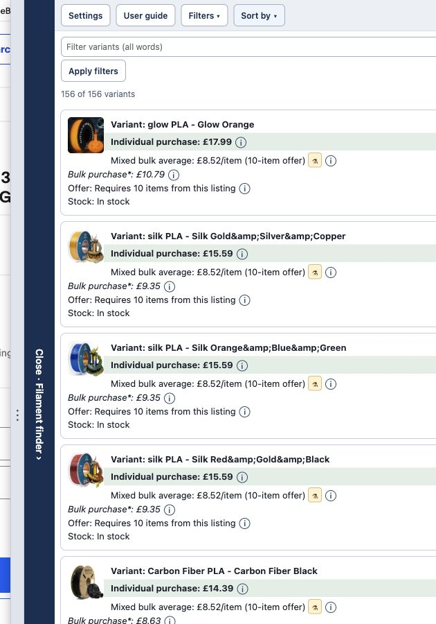
Orders this listing’s variants by their effective item price at the supported offer quantity. The Bulk purchase field is highlighted.
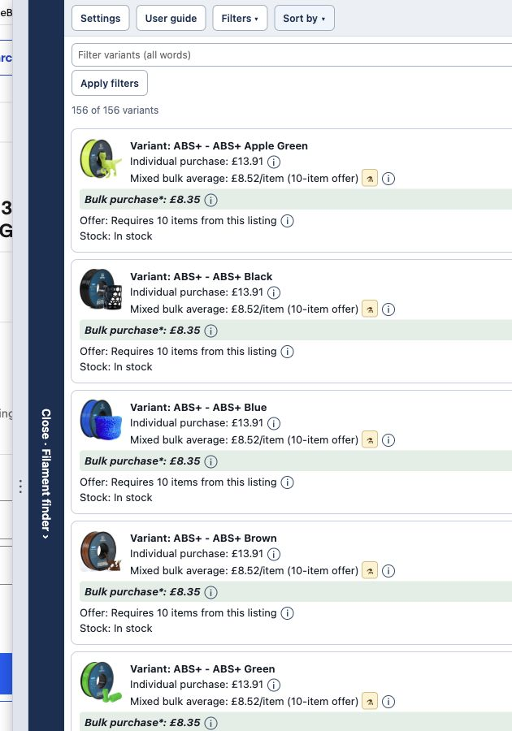
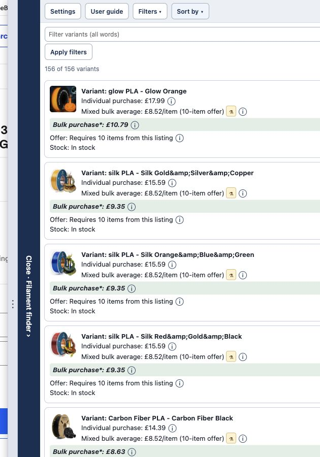
For equal numeric prices, listing and variant names keep the order stable. Mixed bulk average sorts by the listing’s average, then Bulk purchase, then variant name in the selected direction. On an individual listing, all entries share one matching average, so Mixed bulk average is not offered as a separate sort choice.
07 / MAKE IT YOURS
Open Settings in the finder, or right-click its Chrome toolbar icon and choose Settings. Changes save automatically. Appearance changes apply to open finders; the parallel-listing limit is read when you next click Scan.
| Setting | Default | Effect |
|---|---|---|
| Dock side | Right | Places the finder and its protected rail on the left or right. |
| Dock width | 25% | Choose 25%, 50%, 75% or 100% of the viewport. Dragging the handle can save a custom width. The normal open dock has a 280px minimum, limited by the viewport. The empty compact dock uses up to 320px. |
| Resize eBay | Unchecked | Unchecked: the open finder overlays eBay, with a protected 44px rail gutter. Checked: eBay is narrowed by the full finder width so it sits beside the panel. Collapsing always returns to the protected 44px gutter. This also applies on listing pages and when resizing or changing sides. |
| Results layout | Tiles | Tiles show the full fields. Single lines condense each entry, retaining sort highlights and a full-detail tooltip. |
| Listings in parallel | 5 | Between 1 and 999 concurrent listing requests. More than 20 shows a warning because eBay can limit requests or ask for verification. |
| Default sort | Individual purchase, ascending | Search results and individual listings each remember their own sort choice. |
| Combine filters | AND | Both non-empty filter fields must match. This is a page filter control, not a Settings dropdown. |
Reset asks Yes/No before restoring the appearance, parallel limit and sort defaults above. It does not clear your accumulated scan results or current page filters. Done closes Settings after pending saves. Send feedback opens an email addressed to the extension’s feedback address, with the installed version in the subject.
08 / WHEN SOMETHING LOOKS WRONG
Clear Variant and Listing, then Apply filters. The initial query may contain words absent from variant labels. Try one material or colour. Expand Out of stock variants to check whether the matching choices are unavailable.
Click Scan once before relying on pagination. If you clicked Stop, click Scan to resume. A page with only previously discovered listings adds no work. Full reloads can end the live queue; click Scan on the new page.
Expand Could not check for the reason. eBay verification pages, request failures or missing listing data can prevent a scan. Complete any verification directly on eBay and consider a lower parallel setting. A repeated Scan keeps completed/failed entries; to make a fresh attempt at failed listings, start a new eBay search with a different query or URL and click Scan. Reloading the same URL may restore its saved failure list.
Check the selected variant, number of items, coupon eligibility, discount caps, pack size and delivery destination. A title offer may not apply to mixed-price selections as assumed. Postage may change for a multi-item order. The checkout price is the final reference.
It is recalculated from the matching in-stock variants for each listing. Excluding an expensive colour or material changes that set. It is not the mean across every listing in the finder.
Wait for eBay’s controls to load, try the available reload link, or select the material and colour directly on eBay. Some listing layouts do not support automatic selection.
Reload the unpacked extension from Chrome’s Extensions page, then refresh the eBay tab. Existing tabs can retain their earlier content script until refreshed.